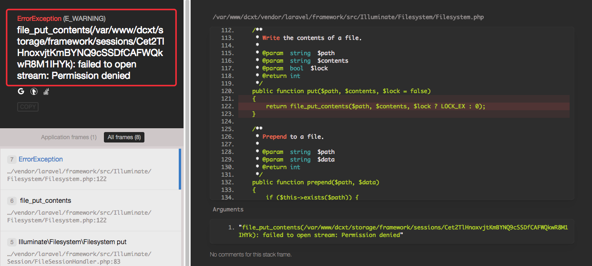

Laravel 服务器配置问题：
1. 配置Apache访问laravel目录
打开apache的配置文件 vim /etc/httpd/conf/httpd.conf ，添加如下配置
1 | <Directory "/var/www/dcxt"> |
/var/www/dcxt这是laravel 根路径AllowOverride All开放使用.htaccess因为laravel5 的访问路径都是
https://zzz.tangliangdong.me/dcxt/public/，会有带个public，因此我们进入 laravel根目录下的public文件夹，新建.htaccess文件，添加如下内容：
1 | <IfModule mod_rewrite.c> |
当然要确保
.htaccess有效，还得确定Apahce开启了mod_rewrite模块。
2. laravel5访问权限问题

刚从本地部署到服务器时，总会碰到点权限的问题，虽然本地也是由Mac开发完成的。
查了下资料，整个laravel文件夹权限都保持 755 没问题，唯独有个文件夹比较特殊，需要把他以及其子文件的权限升到 777，
chmod -R 777 app/storage# for laravel < 5.4chmod -R 777 storage/# for laravel >= 5.4
storage文件夹里包含有日志文件。